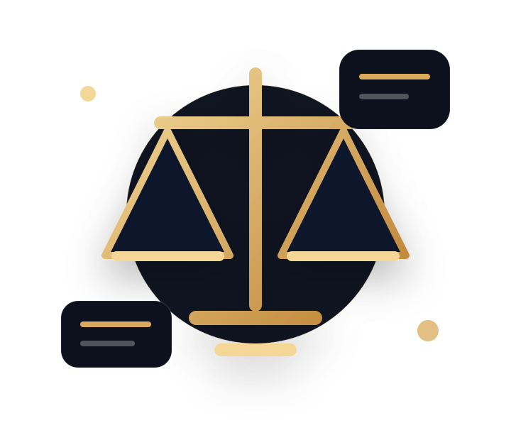

Şirketler Hukuku
Şirket kuruluşu, ortaklık yapıları, hisse devri, sözleşme mimarisi ve ticari uyuşmazlık yönetimi.
- Kuruluş ve ana sözleşme
- Ortaklık sözleşmeleri
- Hisse devri ve uyuşmazlık
Lexora Hukuk; şirketler hukuku, ceza hukuku, iş hukuku, aile hukuku, idare hukuku ve bilişim hukuku alanlarında bireysel ve kurumsal müvekkillere sonuç odaklı danışmanlık sunan modern bir hukuk bürosudur.

Her başvuru önce olay, belge ve risk bakımından incelenir; ardından uygulanabilir bir hukuki plan hazırlanır.
Başvurular düzenli takip edilir, süreçler sade bir dille açıklanır.
Sürece başlamadan önce kapsam ve tahmini maliyet şeffaf biçimde paylaşılır.
Belgeler, duruşmalar, görüşmeler ve gelişmeler planlı şekilde raporlanır.
Kurumsal ve bireysel müvekkiller için dava, danışmanlık, sözleşme ve arabuluculuk süreçlerinde destek sağlıyoruz.
Şirket kuruluşu, ortaklık yapıları, hisse devri, sözleşme mimarisi ve ticari uyuşmazlık yönetimi.
Soruşturma ve kovuşturma aşamalarında ifade, delil, savunma ve duruşma hazırlığı.
İşe iade, kıdem, ihbar, mobbing, iş kazası, işveren danışmanlığı ve sözleşmeler.
İptal davaları, tam yargı davaları, idari başvurular ve kamu işlemlerine karşı hukuki takip.
Boşanma, velayet, nafaka, mal paylaşımı ve koruma tedbirleri konusunda temsil.
Veri ihlali, dijital delil, e-ticaret sözleşmeleri, KVKK uyum ve siber suç dosyaları.
Makale alanı hem ziyaretçiye güven verir hem de Google tarafında uzmanlık algısını güçlendirir. Her makale detay sayfasına bağlanır.
Veri ihlali fark edildiğinde olayın kapsamını belirlemek, delilleri korumak ve bildirim riskini yönetmek için uygulanacak plan.
Ödeme gecikmesi, teslim ayıbı, rekabet yasağı ve hizmet kesintisi gibi risklerde şirketi koruyan sözleşme dili.
Mesaj kayıtları, sosyal medya içerikleri ve ekran görüntülerinin hukuka uygun şekilde dosyaya nasıl taşınacağı.
Feshin geçerliliği, zorunlu arabuluculuk, dava açma süresi ve işçinin stratejik olarak dikkat etmesi gereken noktalar.
Türk hukuk pratiğine uygun uzmanlık profilleri, çalışma alanları ve iletişim aksiyonları tek alanda gösterilir.
Kurucu Ortak • Şirketler ve Bilişim Hukuku
Kıdemli Avukat • Aile ve İş Hukuku
Avukat • Ceza ve İdare Hukuku
Olayın kısa özeti, tarih sırası, varsa sözleşme, ihtarname, mesaj kaydı, mahkeme evrakı veya resmi yazışmalar yeterlidir.
Evet. Çoğu dosyada dava öncesi analiz, ihtarname veya arabuluculuk süreci daha hızlı ve ekonomik çözüm sağlayabilir.
Şirketlerin sözleşme kontrolü, personel süreçleri, KVKK ve ticari riskleri için aylık danışmanlık paketi oluşturulabilir.
Formu doldurduktan sonra hukuk bürosu ekibi sizi arayabilir veya e-posta ile dönüş yapabilir. Alanlara göre başvurular ilgili avukata yönlendirilir.